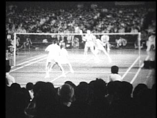
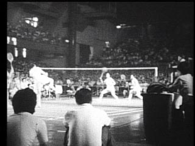
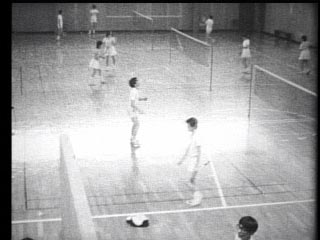
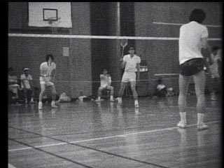
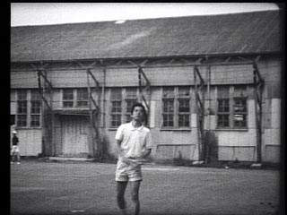
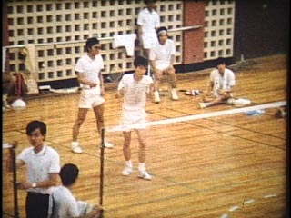
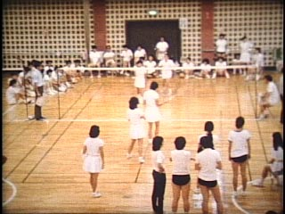

|  |  |  |  |
|
1972年6月11日 ユーバ杯 決勝@東京体育館 日本 対 インドネシア (15sec) |
1972年6月11日 ユーバ杯 決勝@東京体育館 日本 対 インドネシア (11sec) |
1972年頃 駒場四体での練習風景 (8sec) |
1972年頃 駒場四体での練習風景 (10sec) |
|  |  |  | |
|
1972年頃 駒場四体，駒場一体前での素振り (11sec) |
1973年 七帝戦の試合 男子@東北大 (13sec) |
1973年 七帝戦の試合 女子@東北大 (9sec) |